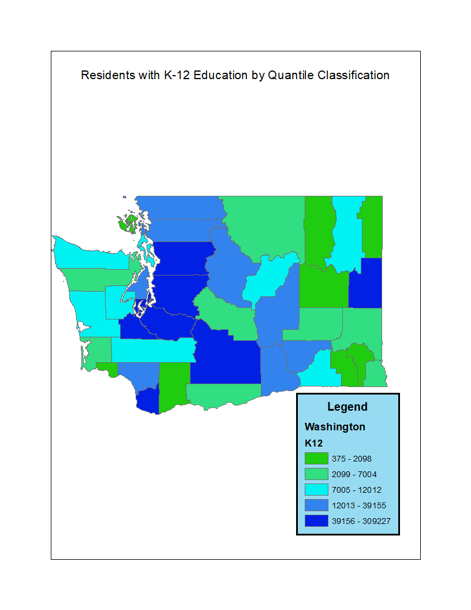
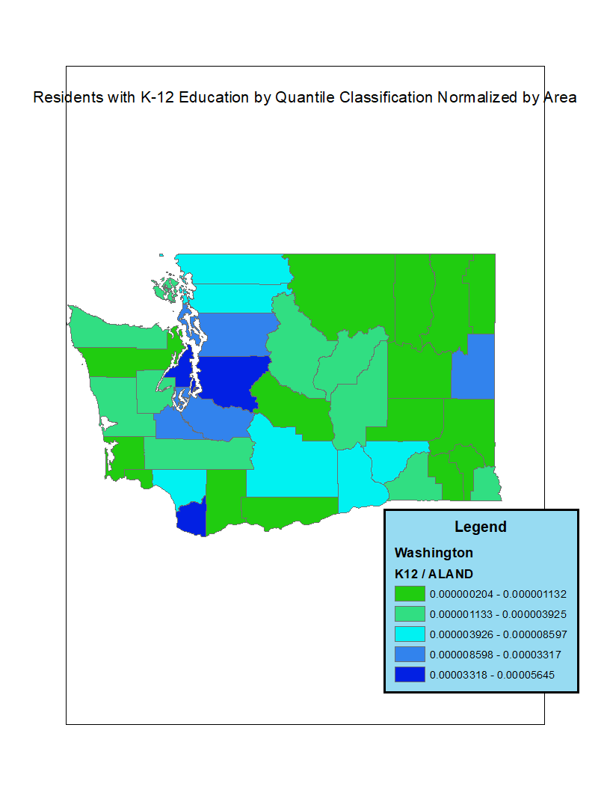
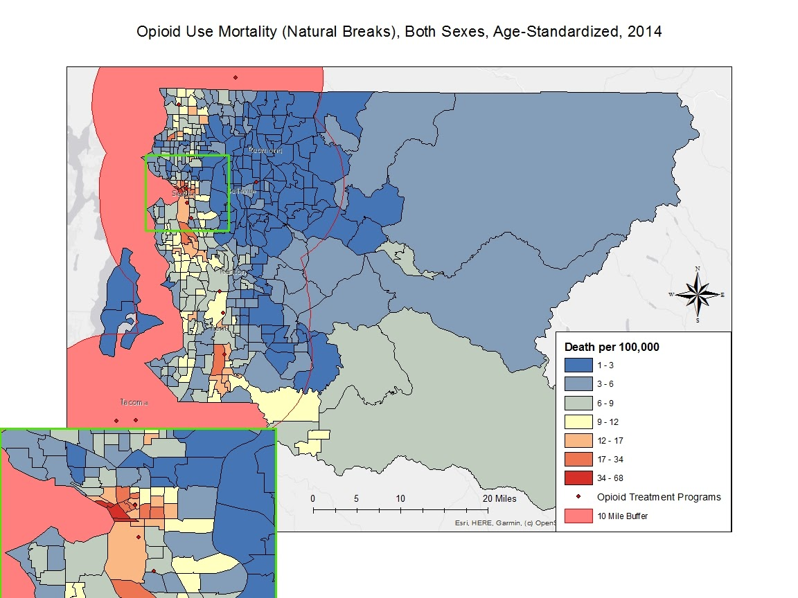

This is one of the very first maps I ever made with ArcGIS, showing the relationship between low-income areas and at-risk schools in King County, WA. This was made as an assignment for my Intro to GIS class, so its emphasis is on readability and simplicity, not complexity or statistical analysis.
Geography
All my work in the wonderful world of maps
This is a map I made for an assignment in a class focusing on statistical analysis and survey methods in the GIS field. This map shows racial clustering in King County, WA, using census data from 2010; the red areas show clusters of Caucasian families, while those in blue show clusters of African American families.


I made these maps to illustrate the stark difference in conclusions that different methods for analyzing data can provide while still sounding quite legitimate; to the layman without any knowledge of data classification or normalization, it would seem from the first map shown here that the only educated residents of Washington State live in Seattle, when in reality, that conclusion can only be drawn if the data isn't normalized by population. Just because more people live in the Seattle area than the rest of the state doesn't mean that the people in Seattle are generally more educated; in fact, residents of the southeast part of the state are more educated on average.
This map is an example of using the kernel-density method for estimating frequency of an event (in this case, heart attacks) over an area. In ArcGIS, the application used to generate this map, the kernel-density program uses a circular area around each point that has a value starting with the value given to each point from the collected data (in this case, the number of heart attacks witnessed at each site) and diminishing outward from the point until the area reaches a predetermined end distance away (in this map, 1,500 feet). If this circular area happens to encounter another point before it fully diminishes, it overlaps with the new point's circular area, creating a smoothed feature layer with each raster plot having its own frequency estimation value, displayed commonly as a heatmap.
This map, and the next, display two methods of analyzing clustering in GIS. This map uses the Moran's I method, which is best used to display which areas of high- or low-values for a spatial dataset are clusters, surrounded by other areas of the same extreme, or outliers, surrounded by areas of the opposite extreme.
This map uses the Getis-Ord Gi*, or hotspot, analysis method to analyze clusters of the same data as above. Hotspot analysis in ArcGIS returns a p-value and z-score for each feature in a spatial dataset based on its neighbors' values; if the returned z-score is high and the p-value is close to zero, its corresponding feature will display as a hotspot, while a low z-score and low p-value will display as a coldspot. This method's use of statistical significance (given by the p-value) make it useful for determining how reliable a cluster's status is; a feature's Gi* statistic must be significantly significant from the rest of the dataset for it to display as a hot or coldspot.
This map is the result of an exercise from an advanced GIS course exploring the concept and implementation of an "index"; that is, the aggregation of several statistical features relating to a more generalized topic into one unifying value, which is useful for comparing broad conditions across a range of geographic areas. In this case, we took average reading and math test scores, student poverty rates, graduate degree rates among teachers, and graduation rates from a 2011 survey of school districts in King County, Washington, as an education opportunity index to visualize disparities among the school districts' performances across the county.

This map shows the spatial distribution of residents that rent their homes, as opposed to owning them, in the state of Washington, shown in shades of blue. The data used to create this map was originally collected and analyzed through the American Community Survey (ACS) between the beginning of 2014 and the end of 2018, culminating in estimates based on the responses from renters instead of a total count. Therefore, the ACS also provides margins of error for each tract surveyed which, along with the estimate, can be used to calculate the coefficient of variation (CV) for each tract. This CV is a measure of the reliability of the estimate; usually, an estimate with a CV below one is considered to be a reliable estimation of the true measure, and a CV above one indicates low reliability.
This is a fairly standard map, displaying land use in the area around Pittsburgh, Pennsylvania; the noteworthy aspect of this map is its quality of presentation. This map uses an ArcGIS tool, "Hillshade", to create an aesthetic layer below the feature layer representing the topography of the area. This tool works by assigning a source of illumination (like the Sun) at a given angle from the horizon, then using altitude data for each raster cell in the map to simulate shadows as they might appear in satellite imagery, but with the ability to customize their appearance by changing the source of illumination.
This map introduces the concept of accessibility in a healthcare context. Here, we focused on how accessible mammography facilities are for women that are prone to needing breast cancer exams, considering many factors including populations of women aged 40-74 across the subject area, capacity and handicap accessibility of mammography facilities, and even driving distance using a street network analysis. Studies like this are often used to highlight gaps in service coverage, and are made more useful by their complexity; they don't simply highlight areas that are lacking services, but they take into consideration how dire the need for a new facility is.

This map is what ended up being the final result of a month-long group project (for which I assumed a leadership role) aimed at running a full-fledged accessibility study, like the one above, focused on opioid clinic accessibility in the greater Seattle area. This project was intended to include clinic capacity, a street network analysis, and factors concerning how prone to opioid abuse the populations of each district are, like the rates of injured veterans or accident victims that were prescribed painkillers. However, due to the Covid-19 pandemic forcing the University of Washington to cut classes short, our group was instructed to present the work we had completed up to that point, which, to at least our minds and that of our professors, still included some analytical merit.
This map was the culmination of a quarter-long project I did for an advanced GIS class that was allowed to focus on any topic in any part of the world; since the issue of climate change carries a great deal of significance to me, I felt it was necessary to conduct this study on it. I chose New Orleans as my subject area because one of the most noticeable effect that climate change has had to date - rising sea levels - has already begun to devastate the coastline in Louisiana, and is expected to practically obliterate a vast portion of the coastline by the end of the century. This destruction is what this map displays; all the land under the light shade of blue is predicted by conservative estimates of sea level rise to be underwater by 2100, with the purple areas representing developed land within just the city of New Orleans. This project required a great deal of research into the topic, which served to reinforce my belief that climate change needs to be addressed immediately.